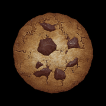

遊び方（iPhone版）このページは、ゲーム内の左上にある 📖 遊び方 ボタンからいつでも開けます。
画面の見方（縦向き）
ショップ／建物のパネル↑つまみをタップで拡大
🛒🏭📊⚙️ℹ️👼
| タブ | 中身 |
|---|---|
| 🛒 ショップ | 建物とアップグレードを買う。買えるものがあると赤い点が付きます |
| 🏭 建物 | 建物ごとの画面、ミニゲーム（菜園・パンテオン・魔導書・株式市場）、ニュース |
| 📊 記録 | 統計・実績・アップグレード一覧 |
| ⚙️ オプション | 設定、セーブのエクスポート／インポート、言語 |
| ℹ️ 情報 | バージョン情報・更新履歴 |
| 👼 遺産 | 昇天（リセットして天国チップを得る）の確認画面を開く |
同じタブをもう一度押すと、パネルの一番上に戻ります。iPhoneを横向きにすると、PC版と同じ3列の画面になります。
タッチ操作
| 操作 | 動作 |
|---|---|
| タップ | 押す・買う・収穫する。指を離した瞬間に反応し、説明は出ません |
| 長押し（0.4秒） | 押している間だけ説明（ツールチップ）を表示。指を離すと消え、買ったり使ったりはしません |
| 押したまま指をずらす | キャンセル（押し間違いに気づいたとき） |
| 上下にスワイプ | ショップや建物の一覧をスクロール。スクロール中は何も買いません |
| ピンチ・ダブルタップ | 何も起きません（誤ズーム防止のため無効にしています） |
クッキーの連打
- 1回のタップが1クリックです。押している間はクッキーが少し縮みます。
- 2本指で交互に叩くと速く押せます。指を離すたびに1回数えます。
- 上限は通常のクリックと同じく1秒に約50回です。
ゴールデンクッキー
画面のどこかに出てきます。指が触れた瞬間に取れるので、動いているものも狙えます。
ショップ
- 上の段がアップグレード、下の段が建物です。タップで1回買います。
- 買う／売る と 1 10 100 で、まとめ買い・売却を切り替えます。
- 値段や効果を見たいときは長押ししてください。長押しでは買いません。
- 一覧を広く見たいときは、パネル上端のつまみをタップします。クッキーの上に重なって、パネルが画面の上まで広がります。もう一度タップすると元に戻ります。
建物とミニゲーム（🏭 建物タブ）
- 建物の行の右下にある lvl で、砂糖玉を使ってレベルを上げます。長押しすると説明だけ表示します。
- レベル1以上の建物には「○○を見る」ボタンが出て、そこからミニゲームを開けます。
菜園（農場）
- 種をタップして選び、区画をタップして植えます。植えてある区画をタップすると収穫します。
- 長押しで育ち具合を確認できます。長押しでは収穫しないので、未熟な作物を誤って抜く心配はありません。
パンテオン（神殿）
- 神様をタップして選び、スロットをタップすると配置します。スロットにいる神様をタップしてから別のスロットをタップすると入れ替わります。
魔導書（魔法使いの塔）
- 呪文をタップで唱えます。長押しで効果とコストを確認できます（唱えません）。
株式市場（銀行）
- 各銘柄の買う／売るボタンをタップします。
砂糖玉
- クッキー画面の左下にあります。長押しで熟し具合を確認し、熟していたらタップで収穫します。長押しでは収穫しません。
昇天（👼 遺産タブ）
- 確認画面で「昇天」を選ぶと、天国のアップグレード画面に移ります。
- 画面はドラッグで動かせます。アップグレードはタップで購入、長押しで説明だけ表示します。
- 終わったら画面上部の「転生」ボタンで戻ります。
セーブ
- 60秒ごとの自動セーブに加えて、ホーム画面に戻ったり画面をロックしたりした瞬間にも保存します。
- Safariとホーム画面アプリは保存場所が別です。移すには、移す元で ⚙️ オプション → 「セーブをエクスポート」 → Copy to clipboard、移す先で ⚙️ オプション → 「セーブをインポート」 → Paste from clipboard → 「Load」の順に操作します。
- PC版や公式ブラウザ版のセーブも、同じ手順で読み込めます。
ホーム画面に追加する
- Safariでこのゲームを開く
- 共有ボタン →「ホーム画面に追加」
- 「Webアプリとして開く」がオンのまま追加
一度ネットにつないで起動しておくと、次からは機内モードでも遊べます。
放置について
- バックグラウンド中も生産: ホームに戻ったり画面をロックしている間、iPhoneはゲームを止めますが、戻ったときに止まっていた時間ぶんを毎秒の生産量で焼き上げます（PCでタブを開いたまま放置したのと同じ）。一時的なブーストは含みません。
- 閉じている間も生産: アプリを閉じていた（またはiPhoneに終了された）間は、公式モバイル版と同じく毎秒の 5%（1時間まで、それ以降は 0.5%）を受け取れます。天国のアップグレード「超越の双門」以降を持っていれば、ゲーム本来のもっと良い計算が使われます。
- どちらも ⚙️ オプション の「iPhone版の放置設定」でオン／オフできます。
困ったとき
- 表示がずれた：iPhoneを一度横にしてから縦に戻す。直らなければアプリを閉じて開き直す。
- 音が鳴らない：消音スイッチがオンだと鳴りません（他のアプリの音楽を止めない設定のため）。
- 文字が小さい／大きすぎる：縦向きは大きめの表示です。PC版の配置で遊びたいときは横向きにしてください。
- 機能を一時的に切る（不具合の切り分け用）：URLの最後に ?iosoff=portraitUI（縦画面UI）、?iosoff=fastTap（タップ処理）、?iosoff=audio（効果音）を付けて開きます。
How to play on iPhone
You can open this page any time from the 📖 Help button at the top left of the game.
The screen (portrait)
Store / Buildings panel↑ tap handle to expand
🛒🏭📊⚙️ℹ️👼
| Tab | What it shows |
|---|---|
| 🛒 Store | Buy buildings and upgrades. A red dot means you can afford something. |
| 🏭 Buildings | One view per building, the minigames (Garden, Pantheon, Grimoire, Stock Market), and the news |
| 📊 Stats | Statistics, achievements and your upgrades |
| ⚙️ Options | Settings, save export / import, and language |
| ℹ️ Info | Version notes |
| 👼 Legacy | Opens the ascend prompt |
Tap the active tab again to scroll back to the top. Turn the iPhone sideways for the original 3-column PC layout.
Touch controls
| Gesture | Result |
|---|---|
| Tap | Press, buy or harvest. It reacts the moment you lift your finger, with no tooltip. |
| Long press (0.4 s) | Shows the tooltip while your finger stays down. Lifting it closes the tooltip; nothing is bought or used. |
| Press and slide away | Cancels the tap |
| Swipe up / down | Scrolls the store or the buildings. Scrolling never buys anything. |
| Pinch / double tap | Does nothing. Zoom is turned off so it can't happen by accident. |
Clicking fast
- Each tap is one click, and the cookie shrinks while your finger is down.
- Drum with two fingers to click faster: every finger lift counts.
- As with a mouse, the limit is about 50 clicks per second.
Golden cookies
They pop the moment your finger touches them, so you can catch moving ones too.
Store
- The top row is upgrades and the list below is buildings. Tap once to buy one.
- Use Buy / Sell and 1 10 100 to buy or sell in bulk.
- Long press to see prices and effects without buying.
- Tap the handle on the panel's top edge to pull the panel up over the cookie and see more of the list. Tap it again to put it back.
Buildings and minigames (🏭 tab)
- lvl at the bottom right of a building row levels the building up with sugar lumps. Long press it to read what that costs.
- Buildings at level 1 or higher get a "View …" button that opens their minigame.
Garden (Farm)
- Tap a seed to select it, then tap a plot to plant it. Tap a planted plot to harvest it.
- Long press a plot to check on the plant. A long press never harvests, so you can't uproot something by accident.
Pantheon (Temple)
- Tap a spirit, then tap a slot to place it. To swap, tap a slotted spirit and then another slot.
Grimoire (Wizard tower)
- Tap a spell to cast it. Long press it to read the effect and cost without casting.
Stock Market (Bank)
- Tap the buy / sell buttons on each stock.
Sugar lumps
- The lump is at the bottom left of the cookie view. Long press to see how ripe it is, then tap to harvest when it's ready. A long press never harvests.
Ascending (👼 tab)
- Confirm "Ascend" in the prompt to open the heavenly upgrade screen.
- Drag to move around. Tap an upgrade to buy it, or long press it to read about it.
- When you're done, use the "Reincarnate" button at the top.
Saves
- The game autosaves every 60 seconds. It also saves the moment you leave the app or lock the phone.
- Safari and the Home Screen app keep separate saves. To move a save, open ⚙️ Options → Export save → Copy to clipboard where the save is. Then, in the other one, open ⚙️ Options → Import save → Paste from clipboard → Load.
- Saves from the PC or official browser versions import the same way.
Add to Home Screen
- Open the game in Safari.
- Tap Share → "Add to Home Screen".
- Leave "Open as Web App" on and tap Add.
Open it once while you're online; after that it also works in Airplane Mode.
Idle progress
- Bake in the background: iOS pauses the game while you are on the Home Screen or the phone is locked. When you come back, the paused time is baked at your normal CpS, like an open tab on a computer. Temporary boosts are not included.
- Bake while closed: while the app was closed (or iOS closed it), you earn 5% of your CpS for up to an hour, then 0.5%, like the official mobile app. With the heavenly upgrade Twin Gates of Transcendence, the game's own, better rule applies.
- Both can be switched off in ⚙️ Options → "iPhone idle settings".
If something is off
- The layout looks wrong: turn the phone sideways and back. If that doesn't fix it, close the app and open it again.
- No sound: the silent switch mutes the game, because the game is set up not to stop music playing in other apps.
- Turn a fix off for testing: open the game with ?iosoff=portraitUI, ?iosoff=fastTap or ?iosoff=audio at the end of the URL.